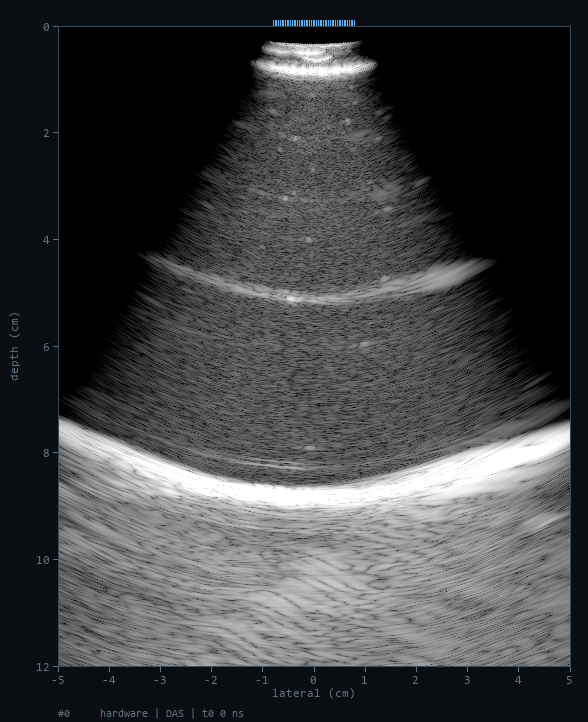
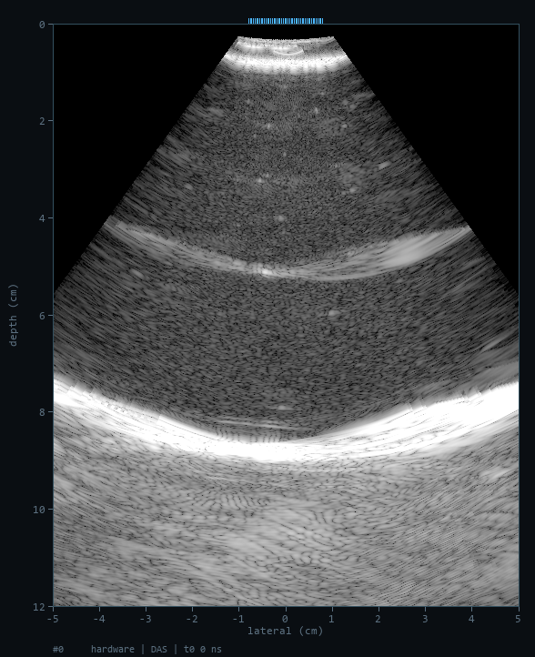
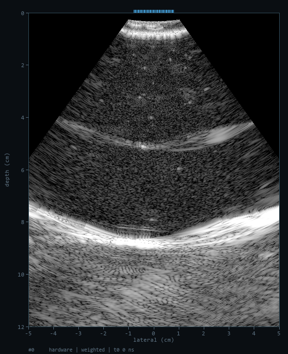
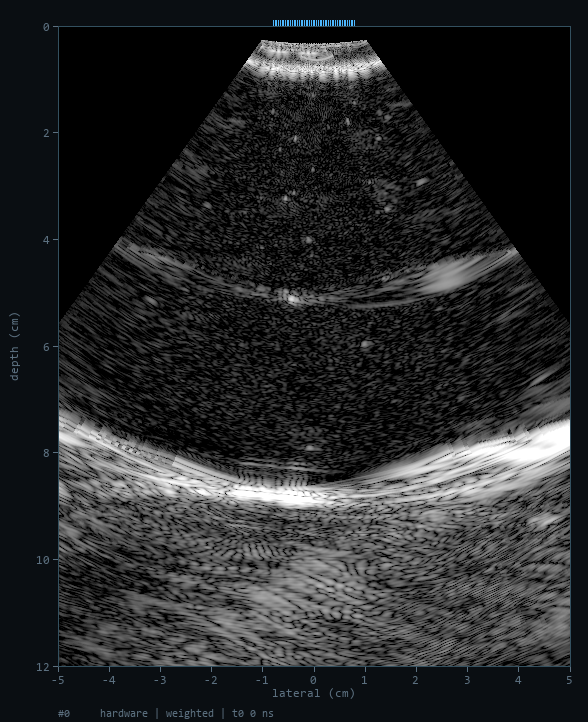
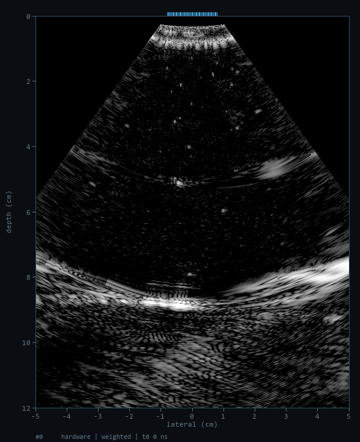
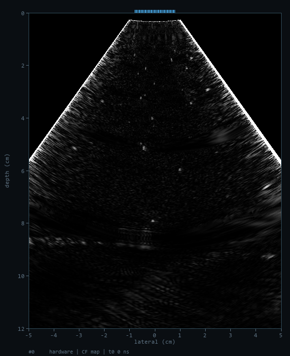

A candidate improved the declared wire score on separate frames; test another target position next.
Scores use linear ordinary-DAS data with fixed physical regions. Lower is preferred; candidates losing more than half the normalized reflector peak, increasing clutter p95 by over 3 dB, or increasing clutter energy ratio by over 50% are rejected. Coherence-weighted images are comparisons only. A wire cannot establish tissue texture quality.






| Trial | Score | Lateral −6 dB mm | Axial −6 dB mm | Clutter p95 dB | Normalized peak |
|---|---|---|---|---|---|
| display-reference | unresolved | 1.262 | 0.645 | -24.9 | 0.0040 |
| baseline | 0.000 | 1.262 | 0.645 | -24.9 | 0.0040 |
| t0-0 | 0.001 | 1.260 | 0.649 | -25.1 | 0.0041 |
| t0-1 | 0.000 | 1.261 | 0.647 | -25.0 | 0.0041 |
| t0-2 | 0.000 | 1.262 | 0.645 | -24.9 | 0.0040 |
| t0-3 | 0.025 | 1.281 | 0.671 | -24.9 | 0.0040 |
| t0-4 | 0.023 | 1.283 | 0.665 | -24.9 | 0.0040 |
| t0-5 | 0.016 | 1.280 | 0.669 | -25.0 | 0.0040 |
| band-0 | 0.009 | 1.268 | 0.682 | -25.7 | 0.0038 |
| band-1 | -0.000 | 1.264 | 0.648 | -25.3 | 0.0041 |
| band-2 | -0.026 | 1.245 | 0.637 | -25.8 | 0.0042 |
| band-3 | 0.024 | 1.278 | 0.674 | -24.8 | 0.0040 |
| band-4 | -0.014 | 1.248 | 0.648 | -25.7 | 0.0041 |
| band-5 | 0.000 | 1.262 | 0.645 | -24.9 | 0.0040 |
| apod-0 | -0.214 | 1.027 | 0.670 | -26.8 | 0.0040 |
| apod-1 | -0.162 | 1.098 | 0.635 | -26.3 | 0.0043 |
| apod-2 | -0.072 | 1.191 | 0.636 | -25.9 | 0.0042 |
| apod-3 | 0.027 | 1.316 | 0.635 | -25.8 | 0.0040 |
| matched-0 | -0.214 | 1.027 | 0.670 | -26.8 | 0.0040 |
| matched-1 | -0.099 | 1.015 | 0.700 | -26.5 | 0.0021 |
| validation-0-baseline | unresolved | 1.262 | 0.643 | -24.6 | 0.0040 |
| validation-0-candidate | unresolved | 1.023 | 0.664 | -26.5 | 0.0040 |
| validation-1-baseline | unresolved | 1.283 | 0.675 | -24.6 | 0.0040 |
| validation-1-candidate | unresolved | 1.028 | 0.664 | -26.5 | 0.0041 |
| display-cf-0.25 | unresolved | 0.843 | 0.617 | -35.1 | 0.0035 |
| display-cf-0.5 | unresolved | 0.724 | 0.581 | -43.0 | 0.0031 |
| display-cf-1.0 | unresolved | 0.604 | 0.537 | -55.5 | 0.0024 |
| coherence-map | unresolved | 0.751 | 1.470 | -19.1 | 0.0000 |
[
{
"frame": 16,
"score": -0.22021472746712853,
"passed": true
},
{
"frame": 31,
"score": -0.2506237272281942,
"passed": true
}
]